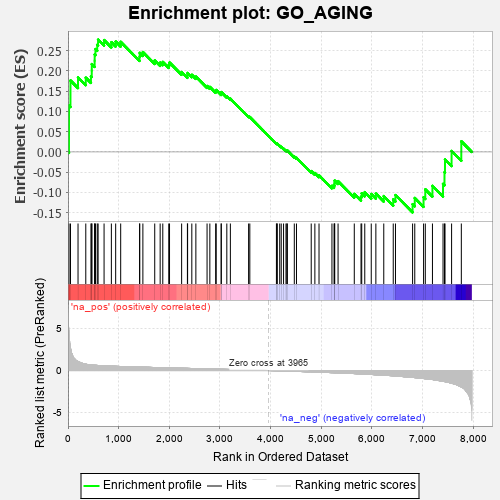
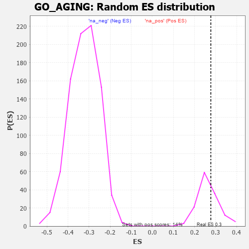

| | | Dataset | 7d |
| Phenotype | NoPhenotypeAvailable |
| Upregulated in class | na_pos |
| GeneSet | GO_AGING |
| Enrichment Score (ES) | 0.27746645 |
| Normalized Enrichment Score (NES) | 1.0611663 |
| Nominal p-value | 0.34558824 |
| FDR q-value | 0.66313446 |
| FWER p-Value | 1.0 |
Table: GSEA Results Summary

Fig 1: Enrichment plot: GO_AGING
Profile of the Running ES Score & Positions of GeneSet Members on the Rank Ordered List
| PROBE | GENE SYMBOL | GENE_TITLE | RANK IN GENE LIST | RANK METRIC SCORE | RUNNING ES | CORE ENRICHMENT | | 1 | H2AX | | | 20 | 4.738 | 0.1145 | Yes |
| 2 | TGFB3 | | | 49 | 2.654 | 0.1765 | Yes |
| 3 | WNT16 | | | 198 | 1.072 | 0.1843 | Yes |
| 4 | GSK3A | | | 351 | 0.745 | 0.1834 | Yes |
| 5 | ERCC1 | | | 453 | 0.660 | 0.1869 | Yes |
| 6 | WRN | | | 469 | 0.649 | 0.2010 | Yes |
| 7 | LRP1 | | | 470 | 0.648 | 0.2171 | Yes |
| 8 | RWDD1 | | | 526 | 0.621 | 0.2254 | Yes |
| 9 | HTRA2 | | | 527 | 0.621 | 0.2408 | Yes |
| 10 | SRF | | | 542 | 0.615 | 0.2542 | Yes |
| 11 | APEX1 | | | 577 | 0.604 | 0.2648 | Yes |
| 12 | PITX3 | | | 594 | 0.596 | 0.2775 | Yes |
| 13 | VASH1 | | | 712 | 0.556 | 0.2764 | No |
| 14 | AMFR | | | 856 | 0.518 | 0.2711 | No |
| 15 | PDCD4 | | | 941 | 0.497 | 0.2727 | No |
| 16 | AKT1 | | | 1040 | 0.476 | 0.2720 | No |
| 17 | CARM1 | | | 1413 | 0.408 | 0.2350 | No |
| 18 | P2RY1 | | | 1416 | 0.407 | 0.2448 | No |
| 19 | TIMP2 | | | 1478 | 0.394 | 0.2468 | No |
| 20 | ERCC2 | | | 1712 | 0.354 | 0.2260 | No |
| 21 | MSH2 | | | 1819 | 0.334 | 0.2209 | No |
| 22 | NUP62 | | | 1871 | 0.324 | 0.2224 | No |
| 23 | GPX4 | | | 1989 | 0.306 | 0.2151 | No |
| 24 | FOXO4 | | | 2004 | 0.304 | 0.2209 | No |
| 25 | CREB1 | | | 2243 | 0.269 | 0.1974 | No |
| 26 | MIF | | | 2357 | 0.252 | 0.1893 | No |
| 27 | SIN3A | | | 2361 | 0.251 | 0.1951 | No |
| 28 | KAT6A | | | 2444 | 0.237 | 0.1906 | No |
| 29 | MBD3 | | | 2524 | 0.223 | 0.1861 | No |
| 30 | TPRA1 | | | 2745 | 0.192 | 0.1630 | No |
| 31 | ATR | | | 2800 | 0.183 | 0.1606 | No |
| 32 | NEK4 | | | 2915 | 0.164 | 0.1502 | No |
| 33 | ERO1A | | | 2925 | 0.162 | 0.1531 | No |
| 34 | BRCA2 | | | 3024 | 0.146 | 0.1443 | No |
| 35 | SEC63 | | | 3025 | 0.146 | 0.1479 | No |
| 36 | OGG1 | | | 3135 | 0.132 | 0.1373 | No |
| 37 | FZR1 | | | 3205 | 0.122 | 0.1316 | No |
| 38 | RPN2 | | | 3565 | 0.065 | 0.0877 | No |
| 39 | MAPK3 | | | 3589 | 0.062 | 0.0864 | No |
| 40 | MTOR | | | 4114 | -0.025 | 0.0206 | No |
| 41 | ABL1 | | | 4125 | -0.027 | 0.0200 | No |
| 42 | MSH6 | | | 4129 | -0.028 | 0.0203 | No |
| 43 | PDX1 | | | 4179 | -0.038 | 0.0151 | No |
| 44 | TIMP1 | | | 4209 | -0.043 | 0.0124 | No |
| 45 | PAX5 | | | 4255 | -0.051 | 0.0080 | No |
| 46 | TBX2 | | | 4303 | -0.060 | 0.0035 | No |
| 47 | ROMO1 | | | 4320 | -0.063 | 0.0030 | No |
| 48 | OPA1 | | | 4330 | -0.065 | 0.0035 | No |
| 49 | LRRK2 | | | 4467 | -0.087 | -0.0115 | No |
| 50 | ILK | | | 4510 | -0.096 | -0.0145 | No |
| 51 | TERT | | | 4801 | -0.157 | -0.0473 | No |
| 52 | ULK3 | | | 4873 | -0.171 | -0.0521 | No |
| 53 | PRKDC | | | 4955 | -0.189 | -0.0577 | No |
| 54 | ATM | | | 5210 | -0.249 | -0.0837 | No |
| 55 | IDE | | | 5252 | -0.258 | -0.0825 | No |
| 56 | PTEN | | | 5262 | -0.261 | -0.0772 | No |
| 57 | CDK1 | | | 5264 | -0.262 | -0.0709 | No |
| 58 | NPY2R | | | 5331 | -0.281 | -0.0723 | No |
| 59 | DNMBP | | | 5651 | -0.362 | -0.1038 | No |
| 60 | TRPC6 | | | 5784 | -0.401 | -0.1106 | No |
| 61 | ADA | | | 5798 | -0.405 | -0.1022 | No |
| 62 | ATG7 | | | 5858 | -0.420 | -0.0993 | No |
| 63 | SCAP | | | 5986 | -0.466 | -0.1039 | No |
| 64 | CALR | | | 6077 | -0.499 | -0.1030 | No |
| 65 | RGN | | | 6233 | -0.547 | -0.1091 | No |
| 66 | COQ7 | | | 6420 | -0.628 | -0.1171 | No |
| 67 | SRR | | | 6464 | -0.646 | -0.1066 | No |
| 68 | KYNU | | | 6802 | -0.816 | -0.1292 | No |
| 69 | PTH1R | | | 6845 | -0.839 | -0.1138 | No |
| 70 | DDC | | | 7019 | -0.950 | -0.1122 | No |
| 71 | GRM5 | | | 7053 | -0.969 | -0.0924 | No |
| 72 | TSPO | | | 7194 | -1.065 | -0.0839 | No |
| 73 | LOXL2 | | | 7403 | -1.269 | -0.0789 | No |
| 74 | KMO | | | 7432 | -1.308 | -0.0501 | No |
| 75 | CASP2 | | | 7442 | -1.322 | -0.0186 | No |
| 76 | LITAF | | | 7572 | -1.511 | 0.0024 | No |
| 77 | PDE4D | | | 7764 | -1.944 | 0.0262 | No |
Table: GSEA details [plain text format]

Fig 2: GO_AGING: Random ES distribution
Gene set null distribution of ES for GO_AGING